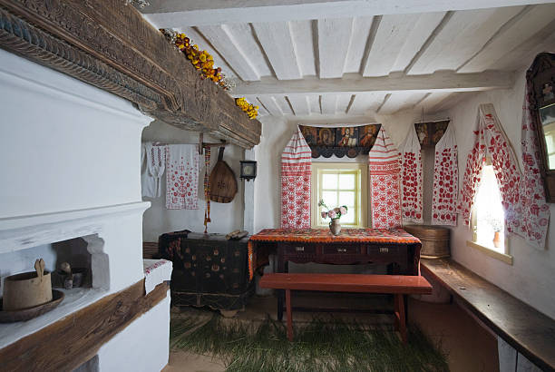

Полтава — адміністративний центр Полтавської області, одне з найдавніших і найзеленіших міст України,
розташоване на берегах річки Ворскли. Місто є важливим культурним, освітнім та промисловим центром регіону.
Символами міста є Біла альтанка, Корпусний сад та пам’ятник полтавській галушці.
Полтава — адміністративний центр Полтавської області, одне з найдавніших і найзеленіших міст України,
розташоване на берегах річки Ворскли. Місто є важливим культурним, освітнім та промисловим центром регіону.
Символами міста є Біла альтанка, Корпусний сад та пам’ятник полтавській галушці.

Перша літописна згадка про Полтаву (під назвою Лтава) датується 1174 роком в Іпатіївському літописі. У XVII–XVIII століттях місто було центром Полтавського полку, а згодом стало осередком української культури, пов’язаним з іменами Івана Котляревського, Панаса Мирного та Володимира Короленка.